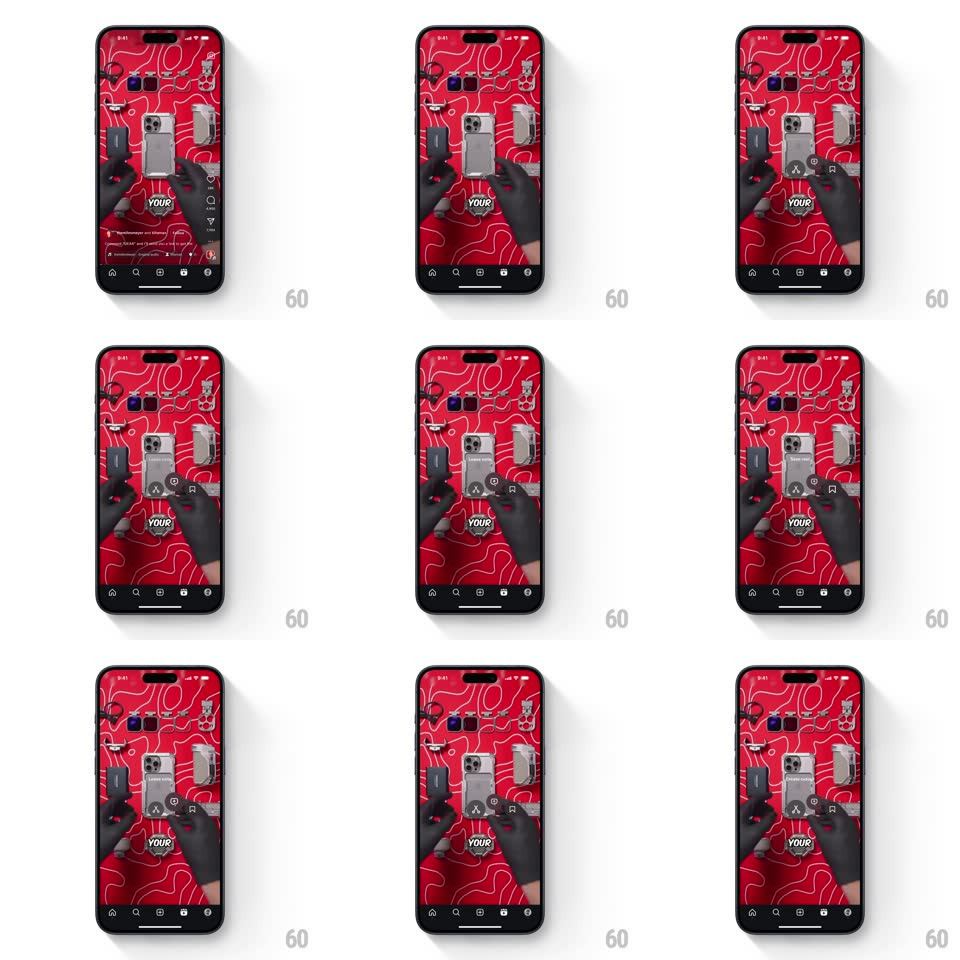

Media
Frame-by-frame

Rebuild this interaction 1:1: Instagram Reels' long-press quick actions - hold on a Reel and a compact radial cluster of action buttons springs in around your finger, each with a dynamic label.

Rebuild this interaction 1:1: Instagram Reels' long-press quick actions - hold on a Reel and a compact radial cluster of action buttons springs in around your finger, each with a dynamic label. ## Integration Integration: stack-agnostic spec - springs given as stiffness/damping, timed motions as duration + curve; map every value to your framework and animation library of choice. ## Scene A full-screen Reel playing (bold on-video text captions over the footage). Long-pressing anywhere summons a quick-actions cluster: small circular glass buttons (like, save, share, remix-style glyphs) fanning into a tight arc just above the press point, each with a tiny text label. ## Motion spec Pattern: long-press radial menu. - Long-press (hold ~250ms): the Reel dims slightly (opacity to 0.85) and the video's big caption words pause; a light haptic fires at menu open. - The cluster bursts in from the press point: each button scales from 0 with elastic overshoot (spring ~400/18, ~350ms settle), staggered 30ms apart along the arc; buttons land on a semicircle (radius ~72px, 5-7 items, 30deg apart). - Labels appear with their buttons: a one-word label under each icon fades/slides in (translateY 4px, 150ms) and can swap text contextually as the finger drags over options. - Drag to select: the hovered button grows (scale 1.15) and its label highlights; the others stay put. - Release on a button: it pops (scale 1.3, 150ms) with a confirmation haptic and the menu collapses back into the press point (scale to 0, staggered 15ms, 150ms) while the Reel undims. - Release off-menu: the cluster scatters out (same collapse, no haptic). ## Calibration - The cluster must fit one-handed reach: keep the arc within a 90px radius of the press point. - Buttons are translucent dark glass over the video - never solid blocks. ## Reduced motion Menu fades in fully formed; selection is a simple highlight. ## Don't miss - The arc is anchored to where the finger actually pressed, not screen center. - The Reel keeps playing behind the dimmed state; the menu is an overlay, not a mode switch.